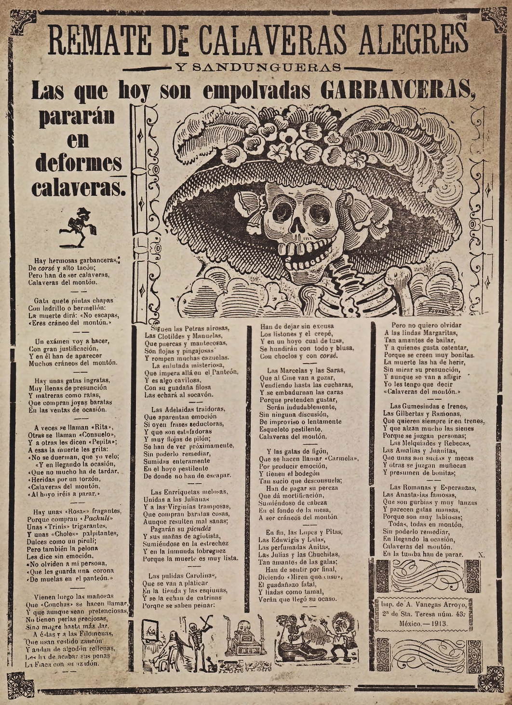
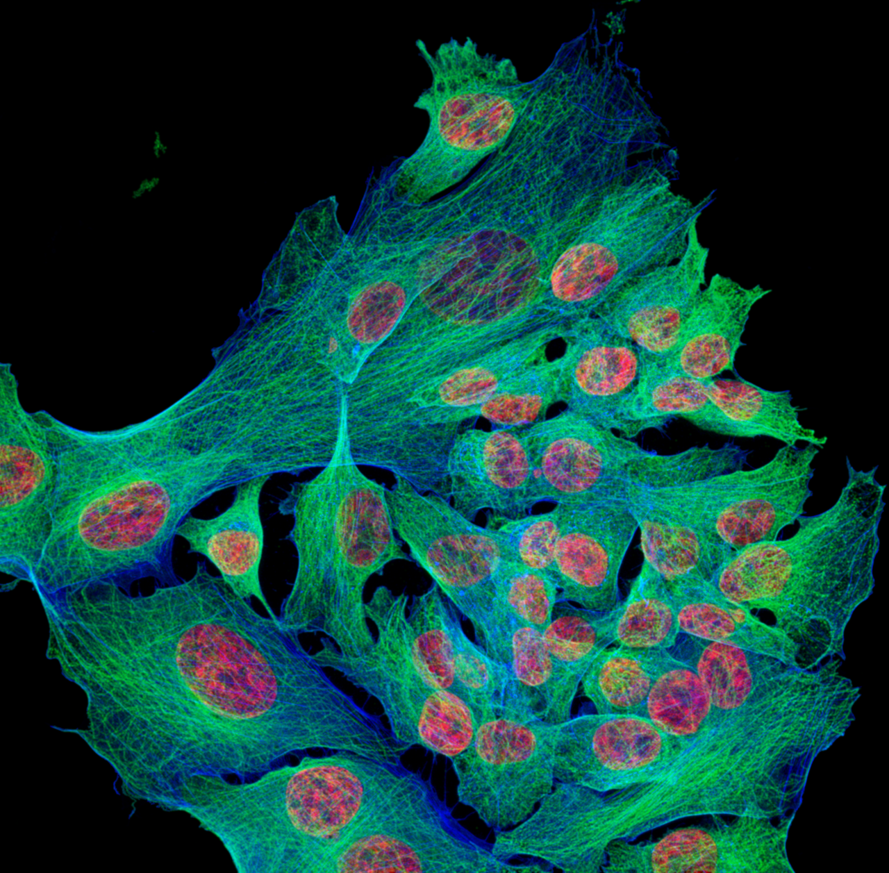

Lula.
diario de la mañana — el mundo, tu ciudad y lo que te asombra

Buen día. Lunes lindo: de 16° a 25°, sin lluvias y sin alertas, después de un domingo pasado por agua. Aprovechalo, porque mañana vuelven las tormentas. Hoy es 2 de noviembre, Día de los Fieles Difuntos, y de ahí sale casi toda la edición: el arte de Posada, el trabajo del Equipo Argentino de Antropología Forense y una palabra, «esqueleto», que significa algo distinto de lo que parece.
- El mundo en cinco minutos3'
- Argentina y Buenos Aires2'
- Ciencia: reparar el ADN de una célula vieja7'
- Mirá a tu alrededor2'
- Receta de estación2'
- La palabra del día1'
- Le français du matin2'
- English corner3'
- Lunes de arte: Posada4'
- Hoy en la historia · un lugar2'
- Lo que me asombra hoy1'
- Pasatiempo: sudoku fácil10'
- Cuaderno: repaso, quiz y escritura4'
Estados Unidos vota mañana, y de eso depende buena parte del humor de los mercados
Mañana se renuevan las bancas del Congreso estadounidense en las elecciones de medio término, y los sondeos ponen en riesgo la mayoría republicana. Para nosotros no es un tema de política extranjera sino de tasas: un Congreso dividido cambia el margen de maniobra fiscal, y lo fiscal estadounidense es lo que mueve al bono del Tesoro a diez años, que viene coqueteando con el 5 %. Ese número es el piso contra el que se mide cualquier deuda emergente, la nuestra incluida.
Y además: en Barcelona se discute hoy la independencia de los bancos centrales, con los gobernadores de España y Francia en el panel —un tema que dejó de ser académico—. El 4 y 5 se hace en Madrid la Cumbre Iberoamericana. En Haití se celebra el Gedé, el día de los muertos vudú, en los cementerios. Y hoy es el Día Internacional para poner fin a la impunidad de los crímenes contra periodistas: la fecha existe porque la enorme mayoría de esos asesinatos no termina en condena.
El riesgo país arranca noviembre cerca de los 800 puntos
Octubre terminó con el riesgo país en torno a 787 puntos: unos 180 más que a principio de mes, cerca del 30 % de suba, y el nivel más alto desde las elecciones de 2025. El dólar, en cambio, casi no se movió —el oficial en el orden de $1.534 / $1.570, el blue cerca de $1.545 / $1.565—, que es justamente lo llamativo: subió el precio del riesgo y no el del dólar.
Cómo leerlo: una consultora descompuso los 777 puntos de una de las ruedas de la semana pasada y estimó que 568 eran «idiosincráticos», es decir, nuestros: no se explican por Brasil ni por la tasa estadounidense. Eso es lo que hace ruido. Un analista muy citado, Gustavo Ber, dice que si el contexto externo sigue así el indicador puede irse a la zona de los 1.000 puntos hacia fin de año. Es una proyección, no un pronóstico, pero marca el ánimo.
Hoy, además, el fisco publica la recaudación tributaria de octubre: el número que mejor muestra, mes a mes, si la actividad se está moviendo.
Para hacer en la ciudad
- Día de los Fieles Difuntos: buen día para caminar la Chacarita, que es el cementerio más grande del país y el menos visitado: la galería de bóvedas subterráneas y el panteón de los artistas son una ciudad aparte. (Fijate el horario y si hay visita guiada antes de ir.)
- Cerró arteBA ayer en La Rural; las galerías de Villa Crespo y Barracas siguen con las muestras que armaron para la feria.
Una molécula que le devuelve a la célula vieja la capacidad de reparar su ADN
De qué estamos hablando: el daño que más importa en el ADN es la rotura de doble cadena: las dos hebras cortadas en el mismo punto. Si no se repara bien, la célula muere, se vuelve senescente o repara mal y queda con una mutación. Con la edad, esa reparación se vuelve más lenta y más chapucera, y el daño se acumula. Este trabajo de Nature Communications hace algo que suena imposible: le devuelve eficiencia a la reparación con una molécula chica, empujando a una proteína que nadie asociaba con el tema.

Quién es quién
- Rotura de doble cadena (DSB): el corte de las dos hebras. Se repara por dos vías: NHEJ, que pega los extremos rápido y a veces pierde bases, y recombinación homóloga, fiel pero que necesita la cromátida hermana y por eso solo funciona después de replicar.
- γH2AX: la histona H2AX fosforilada, que se acumula alrededor del corte. Es el marcador con el que se cuentan los «focos» de daño en el microscopio.
- KIF2C: una kinesina de la familia 13. Las kinesinas suelen caminar sobre microtúbulos; estas, en cambio, los despolimerizan, y KIF2C es conocida sobre todo por su papel en la mitosis, corrigiendo uniones mal hechas entre cromosomas y huso. Desde 2020 se sabe que además participa en la dinámica de las roturas de ADN.
- Progeria: el síndrome de Hutchinson-Gilford, causado por una variante de la lamina A (progerina) que deforma la envoltura nuclear. Los chicos con progeria envejecen aceleradamente, y los ratones modelo sirven para probar intervenciones en meses en lugar de años.
Qué encontraron
- Una molécula chica que activa KIF2C —no que la inhibe, que es lo habitual en farmacología— mejora la reparación de roturas de doble cadena en células envejecidas.
- Y en animal: en ratones con progeria, el tratamiento extendió la vida. Es el resultado que convierte un hallazgo celular en algo que vale la pena perseguir.
- La lógica: si el problema del envejecimiento celular no es solo que se acumule daño sino que la maquinaria que lo arregla pierde eficiencia, entonces reactivar la maquinaria es un blanco distinto del clásico «proteger del daño».
Lectura crítica
- Progeria no es envejecimiento normal. Es un modelo útil, acelerado y accesible, pero su causa es una proteína mutada puntual; extrapolar de ahí al envejecimiento común es un salto grande, y es el salto que todos estos trabajos tienen que justificar.
- Reparar más rápido no es reparar mejor. Si el aumento viniera por el lado de NHEJ, podrías estar comprando velocidad a cambio de más errores. La pregunta que yo le haría al paper es qué pasa con la fidelidad, no solo con la cantidad de focos que desaparecen.
- Cuidado con KIF2C y el cáncer: está sobreexpresada en varios tumores y se la viene estudiando como blanco para inhibir. Una droga que la activa va exactamente en la dirección contraria, y eso hay que mirarlo de frente.
- Yo no vi las figuras, y el DOI me llegó por una nota de prensa, así que si lo vas a citar, confirmalo en el sitio de la revista.
La conexión con lo que estudiás
Esto cruza biología celular y molecular con química medicinal, y tiene una particularidad que vale la pena registrar: casi toda la farmacología que te enseñan es de inhibidores, porque es mucho más fácil bloquear un sitio activo que mejorar una función. Un activador alostérico —una molécula que se une en otro lado y deja a la proteína en su forma más eficiente— es raro y difícil de encontrar. Si alguna vez hacés cribado de moléculas, esa es la diferencia entre buscar una llave que trabe la cerradura y buscar una que la aceite.
«Small-molecule targeting of kinesin-13 KIF2C enhances double-strand break DNA repair and slows down aging». Macedo, da Silva, Sousa-Soares y col., Nature Communications, 1 de noviembre de 2026, doi:10.1038/s41467-026-79165-6 (DOI tomado de la cobertura; verificalo en la revista) · antecedente: eLife 2020, KIF2C y las roturas de doble cadena
Biotec en el mundo real · El Equipo Argentino de Antropología Forense
Hoy es el día de los muertos, así que corresponde el laboratorio que trabaja con ellos: el EAAF, fundado en 1984 para identificar a los desaparecidos de la dictadura, y hoy convocado en medio mundo.
- Qué hacen: arqueología de la excavación, antropología física del esqueleto (sexo, edad, estatura, lesiones) y genética. La identificación moderna se juega ahí: extraer ADN de hueso o diente, donde está degradado y en poquísima cantidad.
- La técnica: se muele el hueso, se descalcifica, se purifica el ADN y se tipifican STR (repeticiones cortas en tándem) autosómicos y de cromosoma Y. Cuando el ADN nuclear está muy destruido, se recurre al ADN mitocondrial, que está en cientos o miles de copias por célula y se hereda por vía materna: no identifica a una persona, pero sí a una línea familiar entera.
- La parte que no es técnica: el banco de muestras de familiares. Sin referencias con quién comparar, el perfil genético no sirve de nada, y conseguirlas es trabajo de campo, de confianza y de décadas.
- Salida laboral: genética forense, bioinformática de perfiles, bancos de datos genéticos, bioestadística (calcular la probabilidad de parentesco es, en el fondo, un cálculo de verosimilitudes).
Ciencia en la vida cotidiana · Por qué el sol te envejece la piel y el frío no
Porque el daño no es térmico: es químico. La UVB es absorbida directamente por el ADN y suelda dos timinas contiguas en un dímero de pirimidina, que la célula tiene que recortar y volver a sintetizar. La UVA, más penetrante, genera especies reactivas de oxígeno que rompen colágeno y elastina en la dermis. Lo primero es mutación; lo segundo, arrugas.
El dato que sirve: un protector solar «SPF 50» mide sobre todo UVB. Para la parte que te arruga hace falta que diga amplio espectro o UVA (el círculo con las letras UVA, en Europa). Y el daño es acumulativo y silencioso: la cara de los camioneros que manejan siempre del mismo lado tiene un lado más envejecido que el otro, y es el lado de la ventanilla.
El tilo, que perfuma dos semanas, y la garcita bueyera


El árbol: tilo
| Nombre científico | Tilia spp. (Malváceas, la familia del algodón y del hibisco). Europeo; en Buenos Aires está plantado en avenidas y plazas. |
|---|---|
| Cómo reconocerlo | Hoja en forma de corazón, asimétrica en la base. Y un rasgo único: las flores cuelgan de una bráctea alargada, una hoja modificada de color más claro que funciona como ala. Cuando el fruto cae, la bráctea lo hace girar y lo aleja del árbol madre. |
| Por qué ahora | Florece de fines de octubre a diciembre y el perfume se siente a media cuadra, sobre todo al atardecer. Es el mismo tilo de la infusión: lo que se seca para el té son las flores con su bráctea. Y es una de las plantas más visitadas por las abejas de la ciudad. |
El ave: garcita bueyera
| Nombre científico | Bubulcus ibis (Ardeidos). Blanca, más chica y compacta que la garza común, con pico y patas amarillentos y, en época reproductiva, plumas color canela en la cabeza y el lomo. |
|---|---|
| Cómo reconocerla | Por la compañía: es la que camina entre las vacas, o atrás del tractor, o en los parques detrás de la máquina de cortar pasto. No come pasto ni molesta al ganado: come los insectos que el animal o la máquina levantan al moverse. |
| Lo asombroso | Es africana. A fines del siglo XIX apareció en el noreste de Sudamérica —se cree que cruzó el Atlántico sola, empujada por vientos— y desde ahí colonizó América entera en pocas décadas, siguiendo la ganadería. Es uno de los pocos casos bien documentados de una especie que se expandió por medio mundo sin ayuda humana directa, aprovechando un ambiente que nosotros le creamos. |
Pionono salado de palta
Cuarenta minutos y queda lindísimo. Ideal para llevar a algún lado.
Ingredientes
- Masa: 4 huevos, 4 cucharadas de azúcar o 2 de miel, 4 cucharadas de harina leudante, una pizca de sal
- Relleno: 2 paltas, jugo de 1 limón, 200 g de queso crema
- Zanahoria rallada, huevo duro, sal y pimienta
Pasos
- Batí los huevos con el azúcar 8 a 10 minutos, hasta que tripliquen el volumen y caiga en cinta.
- Agregá la harina tamizada con movimientos envolventes, de abajo hacia arriba.
- Placa con papel manteca, capa fina, horno fuerte (200 °C) 8 minutos.
- Desmoldá caliente sobre un repasador húmedo y enrollá enseguida. Dejá enfriar enrollado.
- Desenrollá, rellená con la palta pisada con limón y queso crema, y volvé a enrollar.
La química de la receta
Por qué se bate tanto: el pionono casi no lleva leudante. Lo que lo infla es una espuma de huevo: al batir, las proteínas del huevo —sobre todo la ovoalbúmina— se desnaturalizan parcialmente en la interfase aire-agua y se enredan entre sí formando una película alrededor de cada burbuja. El azúcar hace esa película más viscosa y estable. En el horno, el aire atrapado se expande y las proteínas coagulan alrededor: la burbuja queda fija.
Por qué se enrolla caliente: porque a esa temperatura la red proteica todavía es flexible y las moléculas de agua actúan de plastificante. Frío, el almidón ya retrogradó, la masa perdió elasticidad y se quiebra. Y se enrolla sobre un repasador húmedo para que la superficie no se seque mientras toma la forma: después se desenrolla y se vuelve a enrollar sin pelear.
Y el limón en la palta: la palta tiene polifenol oxidasa, una enzima con cobre que, en presencia de oxígeno, convierte fenoles en quinonas y estas se polimerizan en pigmentos marrones. El jugo de limón baja el pH muy por debajo del óptimo de la enzima y además aporta ácido ascórbico, que reduce las quinonas de vuelta. No es que «sella»: la desactiva.
esqueleto sustantivo
griego skéllein (secar) → skeletós (desecado, momificado) → latín tardío sceletus → castellano esqueleto · francés squelette · inglés skeleton
Skeletós quería decir «seco»: un cuerpo desecado, una momia. El nombre no viene de los huesos sino de lo que queda cuando se va el agua, que es la mirada de alguien que vio un cuerpo al final y no en la mesa de disección. La palabra entera es, en el fondo, una descripción de la deshidratación.
Lo gracioso es que el hueso es cualquier cosa menos seco. Es un material compuesto: fibras de colágeno, flexibles y resistentes a la tracción, embebidas en cristales de hidroxiapatita, un fosfato de calcio durísimo que aguanta la compresión. Esa combinación da algo que ningún material puro tiene: resistencia y tenacidad a la vez. Y está vivo. Le pusimos «seco» a lo que es, probablemente, el tejido más dinámico que tenemos.
Combien ça coûte ?
— Bonjour ! Combien ça coûte ?
— Douze euros.
— C'est un peu cher… Vous avez autre chose ?
— Oui, celui-ci est à huit euros.
— Parfait, je le prends.
| combien ça coûte ? | ¿cuánto cuesta? [kom-BIAN sa KUT] |
|---|---|
| c'est cher | es caro [se SHER] |
| vous avez… ? | ¿tiene…? [vu-za-VE] |
| je le prends | me lo llevo [she le PRAN] |
Un truco
Para suavizar cualquier cosa, los franceses usan un peu: c'est un peu cher (es un poquito caro) en vez de c'est cher, que suena a reproche. Y fijate en celui-ci / celui-là: «este» / «aquel». La partícula -ci es cerca y -là es lejos, igual que en ici (acá) y là (allá). Si no te acordás de la palabra del objeto, celui-ci y el dedo resuelven el 90 % de las compras.
The arithmetic of identification
A genetic identification is never a photograph; it is an arithmetic claim. What the laboratory produces is a likelihood ratio: how much more probable the observed profile is if these remains belong to the missing person than if they belong to someone unrelated. Courts and families both want the sentence that begins "this is", and the science offers instead a number that must be interpreted — which is why the forensic report and the newspaper headline so rarely say the same thing.
The arithmetic also has an awkward dependency. A profile means nothing on its own; it means something only against a reference, and references come from relatives who have to be found, persuaded and, in the cases that matter most, outlived by nobody. Where a family has been destroyed or scattered, the most sophisticated sequencing in the world yields a perfect profile that matches nothing at all.
- a likelihood ratio — un cociente de verosimilitudes
- a claim — una afirmación (que hay que sostener)
- awkward — incómodo, poco práctico
- to persuade — convencer
- to be outlived by — que alguien te sobreviva
- to yield — dar como resultado, arrojar
- unglamorous — sin brillo, nada vistoso
- to underestimate — subestimar
Posada: un grabador de diario que inventó cómo se ve la muerte
José Guadalupe Posada (1852-1913) no se consideraba artista. Era grabador de taller en la Ciudad de México, trabajaba para imprentas populares —sobre todo la de Antonio Vanegas Arroyo— e ilustraba hojas volantes: pliegos baratos que se vendían en la calle con crímenes, milagros, desastres, corridos y, cada noviembre, «calaveras»: versos satíricos donde los vivos aparecen ya muertos. Hizo miles. Murió pobre y lo enterraron en una fosa común.
Qué estás mirando
- La técnica: empezó con litografía y terminó usando zincografía: dibujaba con tinta grasa sobre una plancha de cinc y mordía el resto con ácido. Rápido y barato, que era la condición del oficio. La línea gruesa, el negro plano, el contraste duro son lo que esa técnica y esa prisa daban.
- La Catrina: el grabado de tapa se llamaba «La Calavera Garbancera». «Garbancera» era el mote para la vendedora de garbanzos que, siendo indígena, se pintaba de blanco y renegaba de su origen vistiéndose a la europea. De ahí el chiste: un esqueleto con un sombrero carísimo de plumas y nada más. La burla no es a la muerte, es a la pretensión.
- Las calaveras como género: igualan. Un esqueleto con sombrero de obispo, otro con galera de político, otro de revolucionario: debajo del disfraz, todos el mismo hueso. En un país muy desigual, era una forma de decir lo que de frente no se podía.
- Nunca están quietos. Posada dibujaba los esqueletos bailando, bebiendo, andando en bicicleta: el humor está en que siguen haciendo exactamente lo que hacían en vida.
Cómo terminó en los museos
Posada fue rescatado después de muerto, en los años veinte, por los muralistas: Diego Rivera y José Clemente Orozco lo reivindicaron como el artista popular mexicano por excelencia, en un momento en que el país buscaba una identidad visual propia y no europea. Rivera, además, le puso a la Garbancera el nombre con el que la conocemos —la Catrina— y la pintó, de cuerpo entero y del brazo del propio Posada, en su mural Sueño de una tarde dominical en la Alameda Central (1947).
Un trabajador gráfico que hacía imágenes para que se vendieran por un centavo en la calle terminó definiendo, para el mundo entero, el aspecto que tiene el Día de Muertos.
2 de noviembre de 1917: la Declaración Balfour, en 67 palabras
El ministro de Relaciones Exteriores británico, Arthur Balfour, le escribió una carta de un párrafo a lord Rothschild diciendo que el gobierno de Su Majestad veía «con buenos ojos el establecimiento en Palestina de un hogar nacional para el pueblo judío», y aclaraba que nada debía perjudicar «los derechos civiles y religiosos de las comunidades no judías existentes». Palestina todavía era otomana: Gran Bretaña estaba prometiendo un territorio que no controlaba, en plena guerra, mientras hacía promesas parcialmente incompatibles a los árabes y se repartía la región con Francia en un acuerdo secreto.
Sesenta y siete palabras, escritas en una tarde, que siguen discutiéndose ciento nueve años después. Esta semana, sin ir más lejos, en el reparto de bancas de la Knéset.
El lugar: Jerusalén
| Dónde | En las colinas de Judea, a 800 metros sobre el nivel del mar y a 60 km del Mediterráneo. Sin puerto, sin río y sin ruta comercial propia: es una ciudad que existe por su significado, no por su geografía. |
|---|---|
| Qué hay | Un kilómetro cuadrado amurallado que contiene el Muro Occidental, la Explanada de las Mezquitas con la Cúpula de la Roca y el Santo Sepulcro: los tres lugares más disputados del planeta, a metros uno del otro. |
| El dato | Fue destruida y reconstruida unas veinte veces, y su estatus final es, desde 1947, el punto que toda negociación deja para el final. |
Tu esqueleto no es el mismo que hace diez años
El hueso parece lo más permanente que tenemos y es, en realidad, una obra en construcción constante. Hay dos tipos de células trabajando en sentidos opuestos: los osteoclastos, enormes y multinucleados, que perforan el hueso viejo disolviendo primero el mineral con ácido y después la matriz de colágeno con enzimas; y los osteoblastos, que vienen atrás y depositan hueso nuevo en el pozo. El conjunto se llama unidad de remodelación y funciona como una cuadrilla: uno rompe, el otro rellena, y el tejido queda renovado sin perder la forma.
A ese ritmo, el esqueleto adulto se reemplaza por completo cada diez años aproximadamente. Lo que cambia con la edad no es que el proceso se detenga, sino que se descompensa: los osteoclastos siguen igual y los osteoblastos no llegan a rellenar. Eso es la osteoporosis, y por eso los tratamientos no «agregan calcio»: frenan la demolición para que el relleno alcance.
Y la parte que me gusta: lo que decide dónde poner hueso nuevo es la carga mecánica. Los osteocitos, enterrados en la matriz, sienten la deformación y mandan la señal. Caminar le dice a tu esqueleto dónde hace falta. Un hueso en reposo absoluto —una pierna enyesada, un astronauta— se desarma, porque nadie le pidió que estuviera ahí.
El del lunes
Repaso y quiz de la mañana
Repaso de idiomas
Quiz
¿Qué hace la molécula del trabajo de hoy?
Una limitación importante del trabajo es que…
Cuando el ADN nuclear está muy degradado, la genética forense recurre a…
¿Por qué el pionono se enrolla caliente?
«Esqueleto» viene de una raíz que significa…
«La Calavera Garbancera» se burla de…
¿Qué decide dónde se deposita hueso nuevo?
Escritura
- Quiz: activa KIF2C · la progeria no es envejecimiento normal · ADN mitocondrial · frío se quiebra · seco · la pretensión · la carga mecánica.
- Repaso: combien ça coûte ? · c'est un peu cher · je le prends · un cociente de verosimilitudes · dar como resultado · sin brillo, nada vistoso.
- Francés: por ejemplo, «Combien ça coûte ? — C'est un peu cher. Vous avez autre chose ?»
Sudoku:
Fuentes de esta edición
- Mundo: Agenda de EFE del 2 de noviembre
- Mercados: MDZ: el riesgo país arranca noviembre cerca de 800 · Infobae: el próximo test
- Clima: La Nación, con datos del SMN · Perfil
- Ciencia: Nature Communications: KIF2C y la reparación del ADN · Equipo Argentino de Antropología Forense
- Arte e historia: Britannica: José Guadalupe Posada · Britannica: la Declaración Balfour
Mañana, martes: moda. — Lula.